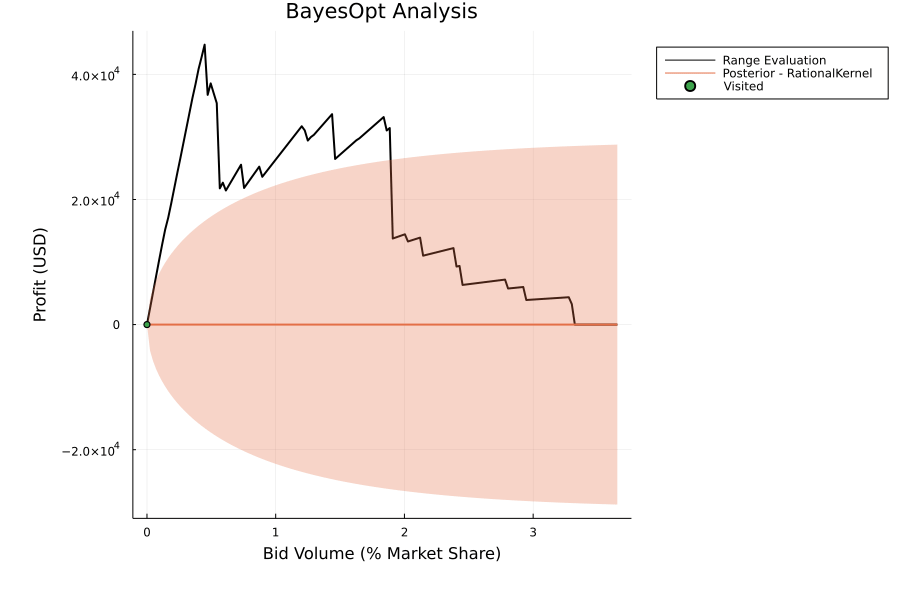

01 · DesignA market is four functions
The response map as a function call
A market is a subtype of Market that implements build_market, change_bids!, clear_market! and calculate_profit. The generic functions profit_for_bid! and profit_curve!, built on these four, evaluate any market. In the notation of Endogenous Response, profit_for_bid! evaluates \(u\mapsto J(u)\) at the cost of one clearing; for an electricity market,
the cleared quantity of each strategic offer times its nodal price, the multiplier of power balance at its node.
Search methods are compared on equal terms when they share the evaluation and are charged per clearing. A new market enters by implementing the four methods; the VolumeMarket of PortfolioOpt.jl, in which an allocation is settled at realized prices, is one such market.
The clearing is a PowerModels formulation
The market type PowerModelsMarket adds strategic generators to a PowerModels.jl network (add_generator), treats their maximum outputs as the offered quantities, and clears by optimal power flow in the formulation passed as market_formulation: DC power flow by default, AC power flow, or any other PowerModels formulation, with the problem builder passed as opf_builder. Linear and nonlinear clearing of one network therefore differ in a single argument, which is the comparison made on Endogenous Response.
One market, three kinds of access
Endogenous Response distinguishes exact, evaluation-only and local access to the response, and the same market object supplies each.
- Evaluation. The function
profit_for_bid!serves derivative-free methods and surrogate models; the documentation drives it with Optim.jl, with Bayesian optimization in Nonconvex.jl, and with Gaussian-process fits. - Local. The function
profit_and_gradient_for_bid!returns the profit with a first-order estimate from the clearing prices: the nodal price for each offer that clears at its limit, and zero for the other offers. The estimate is also registered as a ChainRules rule, so optimizers based on automatic differentiation step through a clearing. It holds prices fixed; the full response of the clearing to an offer, used in the comparison on Endogenous Response, is computed by DiffOpt.jl. - Exact. The call
instantiate_model(market; jump_model = Lower(model))writes the clearing into the lower level of a BilevelJuMP.jl model, whose reformulations, products of complementary pairs or big-M disjunctions, give the single-level program with equilibrium constraints.
A comparison across kinds of access is only meaningful if the market is identical in each, and here it is the same object.

02 · ExampleA producer's offers on a test network
The example follows the package README: new generators are added at a contiguous block of buses of the IEEE 118-bus case, offered quantities are spread by fixed weights, and the total is the decision.
using OptimalBids, OptimalBids.PowerModelsMarkets
using HiGHS
network_data = PowerModels.parse_file("pglib_opf_case118_ieee.m")
buses = collect(keys(network_data["bus"]))[21:31]
generators = [add_generator(network_data, parse(Int, b)) for b in buses]
market = build_market(PowerModelsMarket, network_data, generators, HiGHS.Optimizer)
weights = rand(length(generators))
weights ./= sum(weights)
# Evaluation: one clearing per call, for derivative-free or surrogate search
profit(total) = profit_for_bid!(market, weights .* total)
curve = profit_curve!(market, [weights .* v for v in 0.0:1.0:155.0])
# Local: profit and a first-order estimate from the clearing prices
y, Δ = profit_and_gradient_for_bid!(market, weights .* 50.0)Passing market_formulation = ACPPowerModel and a nonlinear solver to build_market clears the same offers under AC power flow; every line after it is unchanged.
03 · ResearchWhere the package carries the theory
- Endogenous Response. The paper builds its strategic-bidding instances with the package on PowerModels clearing models, and the Bayesian-optimization illustration on that page is one of the package's examples.
04 · CitationHow to cite
The repository has no citation file. For the methods, cite the strategic-bidding paper:
@article{rosemberg2025strategic,
title = {Strategic bidding in energy markets with gradient-based iterative methods},
author = {Rosemberg, Andrew and Pacaud, Fran{\c{c}}ois and Dias Garcia, Joaquim and Parker, Robert B. and Sundar, Kaarthik and Bent, Russell and Van Hentenryck, Pascal},
journal = {Sustainable Energy, Grids and Networks},
volume = {43},
pages = {101878},
year = {2025},
doi = {10.1016/j.segan.2025.101878}
}For the package itself:
@misc{rosemberg_optimalbids,
author = {Rosemberg, Andrew W.},
title = {{OptimalBids.jl}: Evaluating offers in markets and auctions},
howpublished = {\url{https://github.com/andrewrosemberg/OptimalBids.jl}},
note = {Julia package, version 1.3.3}
}